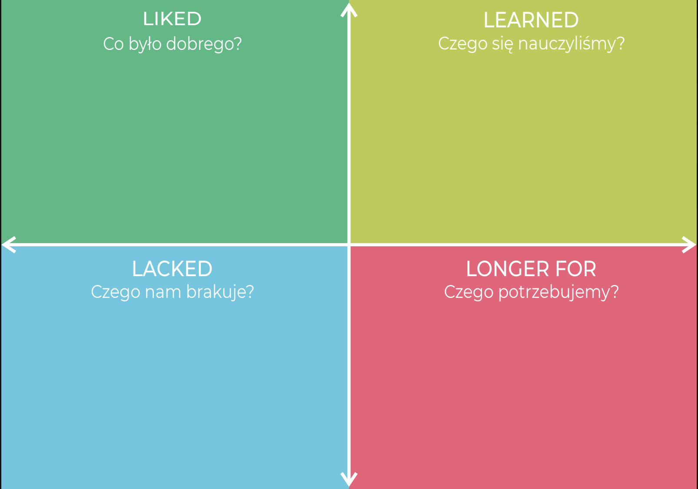

4L – cztery pytania, które pomagają zespołowi wyciągać wnioski z doświadczeń
Nie wystarczy zakończyć projekt. Warto jeszcze czegoś się z niego nauczyć.
Co zadziałało? Czego się nauczyliśmy? Czego nam zabrakło? Czego potrzebujemy w przyszłości?
4L to proste ćwiczenie retrospektywne, które pomaga zespołowi zatrzymać się po projekcie, ważnym etapie pracy, wydarzeniu czy okresie intensywnych zmian i zamienić doświadczenia w konkretne wnioski.
Na czym polega 4L?
Podziel tablicę na cztery części:

{{ q.sub }}
Dokładnie na tych czterech perspektywach opiera się format 4L opisany w materiale 4change.
Jak przeprowadzić ćwiczenie?
Najpierw daj każdemu uczestnikowi kilka minut na samodzielne zapisanie odpowiedzi. Dzięki temu głosu nie przejmą wyłącznie najbardziej aktywne osoby.
Następnie umieśćcie wszystkie odpowiedzi na wspólnej tablicy.
Połączcie podobne obserwacje i porozmawiajcie o tych, które pojawiały się najczęściej.
Szczególnie przyjrzyjcie się relacji między Lacked i Longer for.
Jeżeli zespół mówi: „brakowało nam informacji”, kolejnym pytaniem powinno być: co możemy zmienić, aby następnym razem ich nie zabrakło?
Nie kończcie na refleksji
Na zakończenie wybierzcie 2–3 najważniejsze wnioski i zamieńcie je w konkretne działania.
Bo wartością retrospektywy nie jest samo powiedzenie, co było dobre lub złe. Wartość pojawia się wtedy, gdy zespół wykorzystuje doświadczenie do zmiany przyszłego działania.
Jaki efekt daje 4L?
Ćwiczenie pozwala zespołowi zauważyć dobre praktyki, nazwać potrzeby i bariery oraz wyciągnąć wnioski bez koncentrowania rozmowy wyłącznie na błędach.
Dobrze sprawdzi się po zakończeniu projektu, etapu pracy, warsztatu, wdrożenia czy okresu dużej zmiany.
{{ f.value }}
Poprowadzimy retrospektywę Waszego zespołu albo pokażemy, jak robić ją samodzielnie.